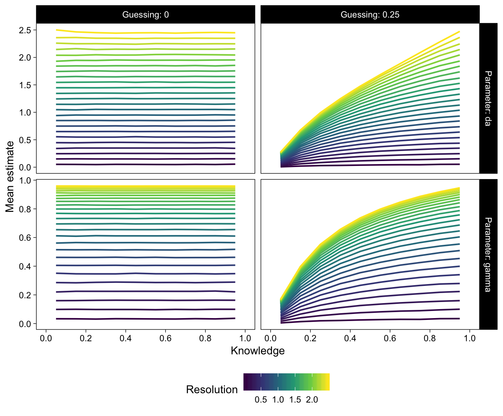
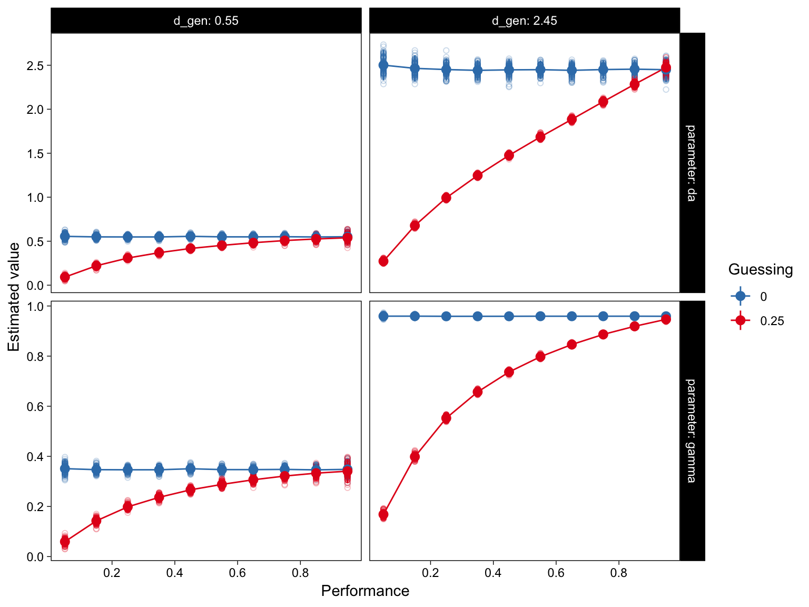
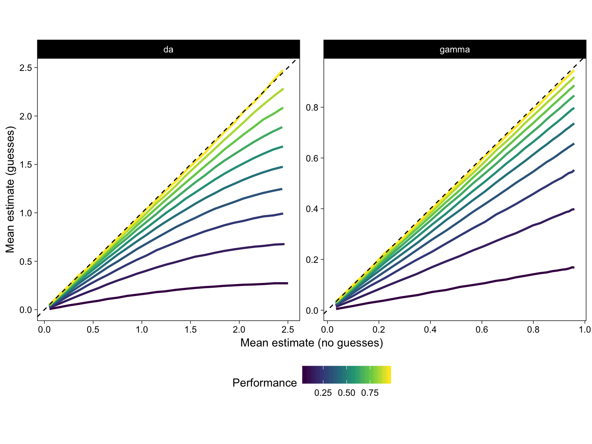
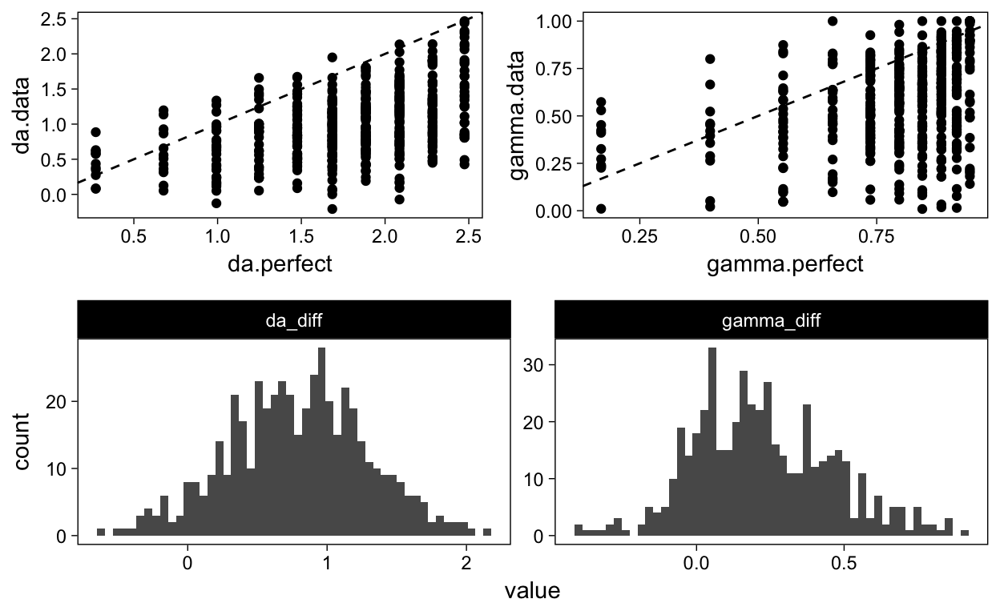
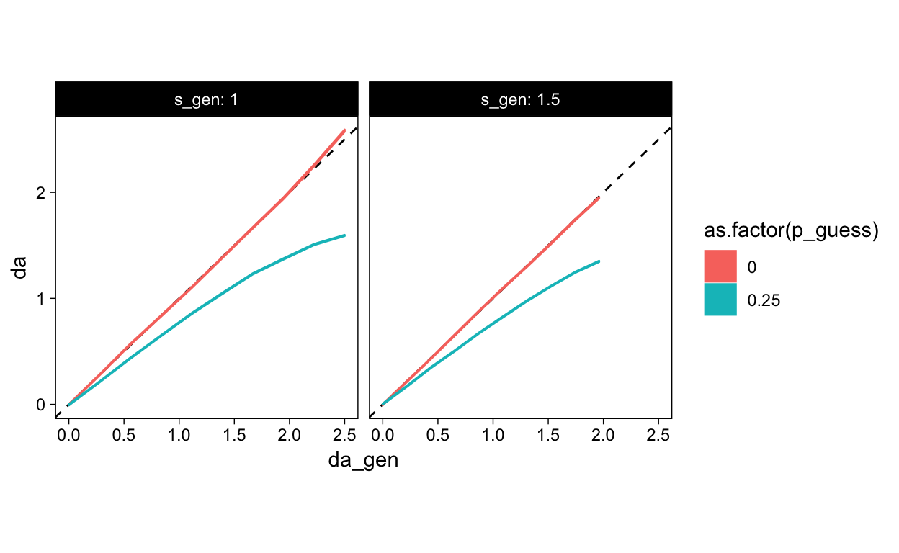
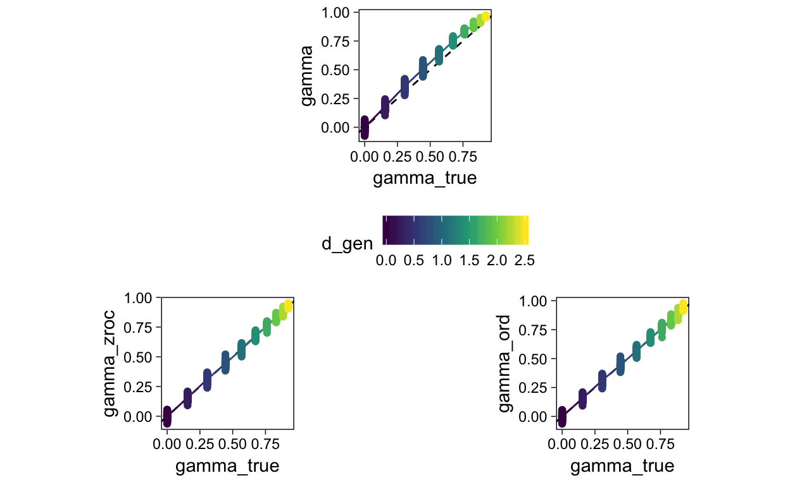
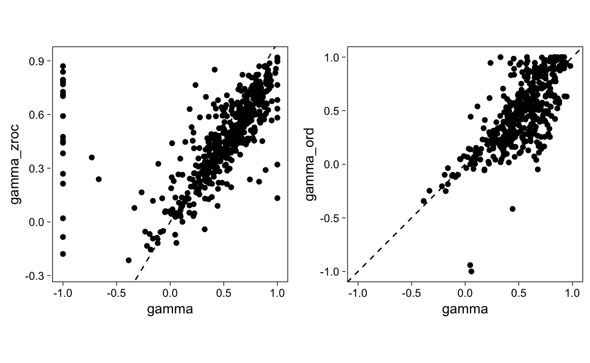

A simulation study investigating the impact of task knowledge and guessing on resolution metrics
This simulation examines potential bias in measures of metacognitive resolution (gamma correlation and \(d_a\)) due to guessing and task knowledge.
It was previously argued that gamma is unrelated to criterion test performance Nelson (1984):
Property 3. The feeling-of-knowing accuracy score should be independent of overall recognition performance.
Property 3 states that there should not be any built-in relation between feeling-of-knowing accuracy and overall recognition. The measure of feeling-of-knowing accuracy should allow for the possibility of a person with perfect feeling-of-knowing accuracy at each of many levels of overall recognition performance; for example, there could be completely accurate feeling-of-knowing predictions for a person with overall recognition performance of 90% correct, completely accurate feeling-of-knowing predictions for a person with overall recognition performance of 80% correct, and so on.
However, in mAFC tasks, gamma is downward biased as a function of m (number of response alternatives) (Schwartz and Metcalfe 1994). Below, we show in detail how guesses cause this bias.
Consider two people with perfect resolution answering 10 4-alternative MC questions. Person A knows 2 items, and B knows six items. However, due to guessing, A gets 4/10 right (2 correct guesses) and B gets 7/10 right (1 correct guess). But their resolution is perfect. Metrics of resolution therefore should indicate so.
Here is example person A’s table, observed gamma, and distribution of gammas over 1000 replications.
Confidence
Accuracy 1 2 3 4 5 6
0 1 3 2 0 0 0
1 1 0 1 1 0 1
[1] 0.5238095
Min. 1st Qu. Median Mean 3rd Qu. Max.
0.0000 0.4000 0.6000 0.5923 0.8000 1.0000 And the same for B
Confidence
Accuracy 1 2 3 4 5 6
0 1 1 1 0 0 0
1 1 0 0 2 4 0
[1] 0.8
Min. 1st Qu. Median Mean 3rd Qu. Max.
0.7143 0.8000 0.9000 0.9049 1.0000 1.0000 This simulation produces hypothetical data sets of responses (accuracy & confidence rating pairs) under various conditions of guessing, performance, and true resolution. The simulation scheme is adapted from Benjamin and Diaz (2008), and is outlined for one hypothetical subject as follows:
This simulation is then repeated over a set of hypothetical subjects to obtain mean estimated metrics for combinations of user-determined values. A summary of these variables appears in Table 1.
| Variable | Symbol | Default value |
|---|---|---|
| Number of trials/items | \(N_{trials}\) | 100 |
| Proportion of known items (knowledge) | \(K\) | 0.5 |
| Guessing proportion (i.e. 1/m) | \(G\) | 0 |
| Mean of evidence distribution for known items | \(R\) | 1 |
| SD of evidence distribution for known items | \(\sigma_k\) | 1 |
| Evidence thresholds | \(\tau\) | -1, -.5, 0, .5, 1 |
Metacognitive resolution, defined as R, is then estimated with a number of metrics:
The appendix of this page describes the R code used to implement this simulation.
Here is an example run of the simulation.
| gamma | gz | gt | da | y0 | s | da_ord | d_ord | s_ord | r | p | n | con_m |
|---|---|---|---|---|---|---|---|---|---|---|---|---|
| 0.52 | 0.46 | 0.36 | 0.86 | 0.83 | 1.08 | 0.86 | 0.9 | 1.08 | 0.35 | 0.74 | 24576 | 3.44 |
Figure 1: Example run of simulation scheme with \(R = 1\): Histogram of simulated confidence ratings split by accuracy.
| 0 | 1 | 2 | 3 | 4 | 5 | |
|---|---|---|---|---|---|---|
| 0 | 790 | 722 | 995 | 956 | 788 | 747 |
| 1 | 3 | 18 | 68 | 225 | 461 | 4227 |
Figure 2: Generative SDT model for simulation.
We ran the simulation over a range of values of K and R. The simulation was repeated 100 times at each combination of the generative parameters, with 20000 trials for each repeat.
| Variable | Symbol | Values |
|---|---|---|
| Number of trials/items | \(N_{trials}\) | 20000 |
| Proportion of known items (knowledge) | K | 0.05 - 0.95 |
| Guessing proportion (i.e. 1/m) | G | 0 / 0.25 |
| Mean of evidence distribution for known items | R | 0.05 - 2.45 |
| SD of evidence distribution for known items | \(\sigma_k\) | 1 |
| Evidence thresholds | \(\tau\) | -1, -.5, 0, .5, 1 |
These simulations show that gamma and da are unrelated to performance when guessing=0. However, with guesses, both metrics are confounded by guessing: da and gamma are increasingly downward biased as performance decreases.

We also verified a small variance between simulation runs due to large number of trials for each simulation.

We then assessed the amount of bias in the estimates (with guessing) at various levels of performance

We then compared the observed data values to the simulated values to examine to what extent the observed correlations resembled the necessary relations revealed by the simulation.
However, the simulated data were generated by varying underlying performance (proportion known items), and guesses were then added to produce the observed accuracy values. Accuracy values in the data, likewise, are contaminated by guesses. One way to correct for this is to use a formula to try to convert the observed proportion correct to underlying performance. Thus, we can “correct” the guess-contaminated observed proportions correct to performance values using e.g. Abbott’s formula.
Figure 3: Comparison of observed and corrected proportion corrected.
We then tested whether the performance-resolution metric regression slopes were significantly steeper in the data, vs the equivalent slope in the simulations. We used second degree polynomial regressions. “New improved” (Higham & Higham, 2018) gammas were used.
We tested
\[ \frac{ \hat{\beta}_{1, data} - \hat{\beta}_{1, simulation} } {s.e.\hat{\beta}_{1, data}} \]
Figure 4: Comparison of observed correlations to simulation results.
And then the tests
| exp | parameter | term | sim_coef | N_subj | data_coef | std.error | tval | pval |
|---|---|---|---|---|---|---|---|---|
| 1 | da | p_know | 0.71 | 92 | 0.77 | 0.21 | 0.25 | 0.40 |
| 2 | da | p_know | 0.98 | 90 | 0.88 | 0.25 | -0.38 | 0.65 |
| 3 | da | p_know | 0.98 | 91 | 1.02 | 0.18 | 0.21 | 0.42 |
| 4 | da | p_know | 0.80 | 87 | 1.24 | 0.24 | 1.82 | 0.04 |
| 5 | da | p_know | 1.17 | 85 | 1.03 | 0.23 | -0.62 | 0.73 |
| 6 | da | p_know | 1.08 | 98 | 1.10 | 0.25 | 0.09 | 0.46 |
| 1 | gamma | p_know | 0.42 | 92 | 0.37 | 0.11 | -0.46 | 0.68 |
| 2 | gamma | p_know | 0.54 | 90 | 0.42 | 0.12 | -1.03 | 0.85 |
| 3 | gamma | p_know | 0.54 | 91 | 0.45 | 0.08 | -1.15 | 0.87 |
| 4 | gamma | p_know | 0.46 | 87 | 0.56 | 0.10 | 0.98 | 0.16 |
| 5 | gamma | p_know | 0.60 | 85 | 0.43 | 0.10 | -1.83 | 0.96 |
| 6 | gamma | p_know | 0.57 | 98 | 0.44 | 0.10 | -1.24 | 0.89 |
Next, we approximated what the average gamma & da in each experiment would have been, if guesses were absent. We did this by taking the average gamma, da, and performance of each experiment, and finding their corresponding non-guessing values from the simulations.
| exp | p_know | parameter | mean_data_estimate | p_guess0.25 | p_guess0 | percent_increase | mpc |
|---|---|---|---|---|---|---|---|
| 1 | 0.65 | da | 0.67 | 0.66 | 0.75 | 0.12 | 0.11 |
| 2 | 0.75 | da | 0.88 | 0.87 | 0.95 | 0.08 | 0.11 |
| 3 | 0.75 | da | 0.94 | 0.96 | 1.05 | 0.12 | 0.11 |
| 4 | 0.65 | da | 0.97 | 0.99 | 1.15 | 0.19 | 0.11 |
| 5 | 0.75 | da | 1.15 | 1.14 | 1.25 | 0.09 | 0.11 |
| 6 | 0.75 | da | 1.14 | 1.14 | 1.25 | 0.10 | 0.11 |
| 1 | 0.65 | gamma | 0.35 | 0.36 | 0.41 | 0.17 | 0.11 |
| 2 | 0.75 | gamma | 0.45 | 0.43 | 0.46 | 0.03 | 0.11 |
| 3 | 0.75 | gamma | 0.47 | 0.47 | 0.52 | 0.09 | 0.11 |
| 4 | 0.65 | gamma | 0.48 | 0.50 | 0.56 | 0.17 | 0.11 |
| 5 | 0.75 | gamma | 0.55 | 0.56 | 0.61 | 0.11 | 0.11 |
| 6 | 0.75 | gamma | 0.54 | 0.56 | 0.61 | 0.12 | 0.11 |
Here, we attempt to test observed gamma/da against near-perfect metacognition. Each participant’s observed gamma/da is paired with the corresponding mean simulated estimate at maximum d_gen (corresponding to about gamma = .96) and guessing = 0.25 at the participant’s level of performance.
[1] 0.4738412
[1] 0.794217
Paired t-test
data: tmp$gamma.perfect and tmp$gamma.data
t = 34.908, df = 542, p-value < 2.2e-16
alternative hypothesis: true difference in means is not equal to 0
95 percent confidence interval:
0.3023477 0.3384038
sample estimates:
mean of the differences
0.3203757
Paired t-test
data: tmp$da.perfect and tmp$da.data
t = 36.503, df = 542, p-value < 2.2e-16
alternative hypothesis: true difference in means is not equal to 0
95 percent confidence interval:
0.7837168 0.8728619
sample estimates:
mean of the differences
0.8282894 


Anova Table (Type 3 tests)
Response: d
Effect df MSE F ges p.value
1 p_know_bin 9, 442 0.04 5.98 *** .11 <.0001
---
Signif. codes: 0 '***' 0.001 '**' 0.01 '*' 0.05 '+' 0.1 ' ' 1Guessing bias will lead to underconfidence
# A tibble: 4 x 2
prop_corr p_know
<dbl> <dbl>
1 0.25 0
2 0.5 0.333
3 0.75 0.667
4 1 1 We replicated the simulation of Benjamin and Diaz (2008): For several levels of generative R, we ran 100 sim-subjects with 2000 trials each. For each subject, K was drawn from \(N(50, 10^2)\), rounded to an integer. Instead of 4 rating categories, we used 6 to more closely correspond to our data. G was varied at 0 and 0.25. \(\sigma_k\) was either 1 or 1.5.
Error in ggproto(NULL, super, call = match.call(), aesthetics = aesthetics, : object 'Resolution' not foundThe results of this simulation mirrored those of Benjamin and Diaz (2008): Both gamma and \(d_a\) are monotonically increasing with generative R, but only \(d_a\) has the property of scaling linearly with it. Second, the SDT metrics are more accurately estimated via an ordinal regression (Knoblauch and Maloney 2012). The \(d'_{ord}\) metric recovers the generative parameter in every simulation, and its transformations (\(d_{a-ord}\)) are easily obtained and mirror those of the line-fitting procedure.
However, when some correct answers are guesses (Figure ??, below), all resolution metrics considered here are biased downward.
Error in ggproto(NULL, super, call = match.call(), aesthetics = aesthetics, : object 'Resolution' not foundBecause this pattern of bias is general to all metrics considered here, for simplicity we only consider gamma and \(d_a\) below, because they have most often been discussed in previous literature.
For completeness, we compared estimated \(\hat{d_a}\) to generative \(d_a\)
sim_run <- function(p_know = NA,
n_trials = 100,
p_guess = 0,
d_gen = 1,
s_gen = 1,
tau_gen = c(-Inf, -1, -.5, 0, .5, 1, Inf),
out = "pars",
...) {
levels <- length(tau_gen) - 1
# Performance (p(know) to number of known items)
if (is.na(p_know)) {
# B & D: gaussian(50, 10) draw
n_know <- round(rnorm(1, ceiling(n_trials/2), 10))
} else if (p_know <= 1 & p_know >= 0) {
# Or exact number known
n_know <- ceiling(p_know * n_trials)
}
# Number of known items to number of accurate answers
accuracy <- c(
rbinom(n_trials - n_know, 1, p_guess),
rep(1, times = n_know)
)
# Metacognition evidence values
evidence <- c(
rnorm(n_trials - n_know, 0, 1),
rnorm(n_know, d_gen, s_gen)
)
# Evidence values to confidence ratings
con6 <- cut(
evidence,
breaks = tau_gen,
labels = FALSE
)
# Ratings to 0 - 5, as in data
con6 <- con6-1
# Return data or parameters
dat <- data.frame(accuracy, con6)
if (out == "pars") {
metrics(dat,
confidence = NULL,
levels = levels,
...)
} else if (out == "data") {
dat
}
}
Benjamin, Aaron S, and Michael Diaz. 2008. “Measurement of Relative Metamnemonic Accuracy.” In Handbook of Memory and Metamemory, by John Dunlosky and Robert A. Bjork, 73–94. New York, NY: Taylor & Francis.
Bürkner, Paul-Christian, and Matti Vuorre. 2018. “Ordinal Regression Models in Psychology: A Tutorial.” PsyArXiv, February. https://doi.org/10.31234/osf.io/x8swp.
Knoblauch, Kenneth, and Laurence T. Maloney. 2012. Modeling Psychophysical Data in R. New York, NY: Springer New York.
Nelson, Thomas O. 1984. “A Comparison of Current Measures of the Accuracy of Feeling-of-Knowing Predictions.” Psychological Bulletin 95 (1): 109–33. https://doi.org/10.1037/0033-2909.95.1.109.
Schwartz, Bennett L, and Janet Metcalfe. 1994. “Methodological Problems and Pitfalls in the Study of Human Metacognition.” In Metacognition: Knowing About Knowing, by Janet Metcalfe and Arthur P. Shimamura. Cambridge, MA: The MIT Press.
If you see mistakes or want to suggest changes, please create an issue on the source repository.